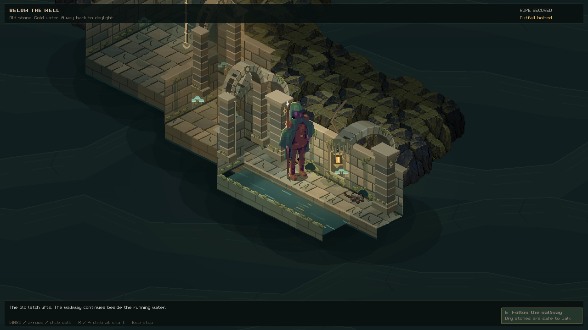
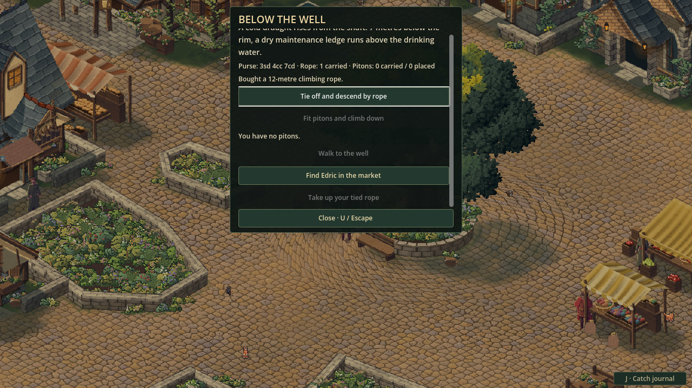
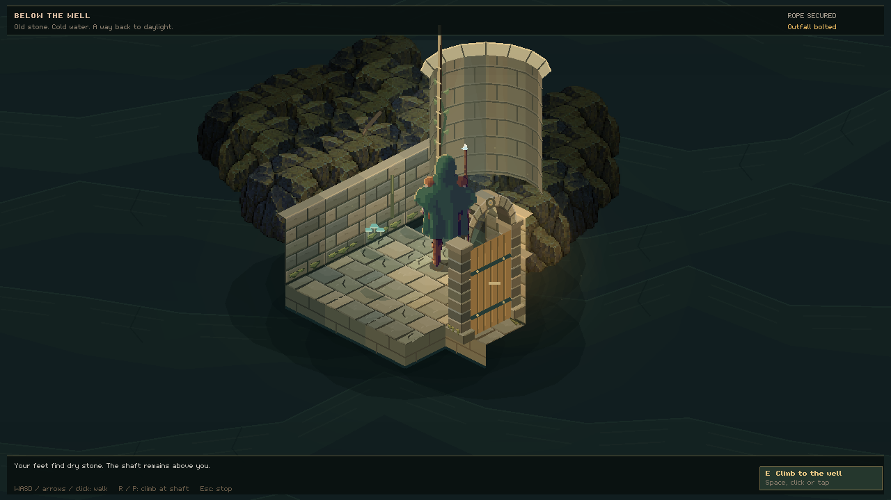

Below the well
24 October 2026 · Day 33
A cold draught at the town well leads to Sprawl's next exploration route: a dry ledge, an old service passage and a culvert that opens at the town's edge. Buy sound climbing gear, find a way through, and leave an opened route behind you.

A familiar place with another way through
The well is one of the first things a traveller sees in the market town. Until now, it has marked the square and stopped a careless step at its curb. This work gives it another purpose. A draught rises through the shaft. Worn footholds disappear beneath the rim. Below the bucket rope, there is somewhere a person might stand.
The route begins with an inspection. Looking down explains the depth, the ledge and the equipment needed to reach it. The next decision belongs to the player: prepare, return later, or leave the mystery alone.
Preparation belongs in the town
Edric's market counter now supplies sound climbing rope and iron pitons. They cost real coin from the traveller's purse, and the supplies are finite. These are ordinary items in the satchel: a suitable rope bought from a visiting trader works too. The thin bucket rope remains part of the well; it cannot quietly become equipment strong enough to carry a person.
A rope is tied to the winch beam before the descent. Pitons offer another approach, fitted into the shaft's masonry. Both leave a means of climbing back. Taking up a rope puts that same item back in the satchel, provided there is room to carry it. The inspection shows what is missing before anyone commits, and the route panel can guide the walk between the well and the market.

One modest drain
At the bottom is a dry maintenance ledge, kept above the well's drinking water. Beyond a service hatch, a passage reaches an iron gate and a stone culvert. A walkway follows its flow toward a grated outfall at the edge of town. This is the practical understructure of a small settlement. Its drinking supply and its drain remain separate.
Walls stop the traveller. The channel is not walking ground. The hatch, gate and outfall have their own sides and latches, so a closed barrier asks for an actual approach. The outfall's bolt can only be drawn from within on the first visit.
Ground becomes surveyed as the traveller advances, while unexplored stretches remain concealed. Keys and chosen destinations move the same body through the same passage.
Stone with weight, walls with life
The first view made the passage look like a strip of paving suspended in black space. The waterworks now sits inside layered bedrock, with substantial masonry holding back the earth. The darkness conceals passages the traveller has not reached, while the surrounding rock makes that darkness feel enclosed.
The arches needed more than a curved outline. Each stone now has thickness, a front and back face, and a dark underside. Bonded piers rise from stepped bases to projecting capitals. The surviving roof ribs cast narrow shadows across the ledge and water, and the cutaway ends show their dressed stone cross-sections. Doorway arches share that depth and give the traveller a convincing opening to pass beneath.
Moss gathers along wet joints, coping stones and the feet of the piers. Small hanging mats break up the edges; seepage stains and mineral traces follow the damp masonry. Warm lanterns catch the stone above cold blue-green water. The paving has staggered joints, and reflections move across the flow without stopping at cell boundaries.
A few rats use the dry edge beneath the wall. They nose along the stones, turn away from an approaching traveller and disappear into small crevices. Their movement makes the culvert feel occupied even before another person has ventured down it. The moss, dripping water and small residents give the waterworks a life of its own.

The return is part of the journey
Reaching the outfall changes the route. Once opened, it becomes another way back into this particular culvert. The well remains above the ledge, with the installed climbing gear waiting for the return. Escape cancels a chosen route; it does not lift the traveller through the roof.
The town now has a connection the player has learned and opened. A later visit begins with that knowledge and those changes.
What had to improve during the work
An earlier well experiment provided a starting point, but reaching a ledge was only part of bringing it into the current game. Saving needed to remember the whole transaction. Keeping the rope while refunding its price on reload would turn an expedition into an endless supply of money and equipment.
The route therefore saves its gear, money, bag, merchant stock, barriers and underground position together. A saved traveller must be standing somewhere valid, with a way out. An unreadable save keeps its original file. Closing the inspection waits for held walking controls to be released, so preparation does not end with an accidental step.
A route ready to grow
This first slice belongs to the default market town. Named towns will need their own suitable surface connections and working suppliers before the same activity reaches them. The current trip centres on preparation, exploration and return. Underground fights, hidden rewards and larger cave systems have their own work ahead.
For now, a familiar square has gained a place beneath it, and the traveller can come back having changed how that place is entered.